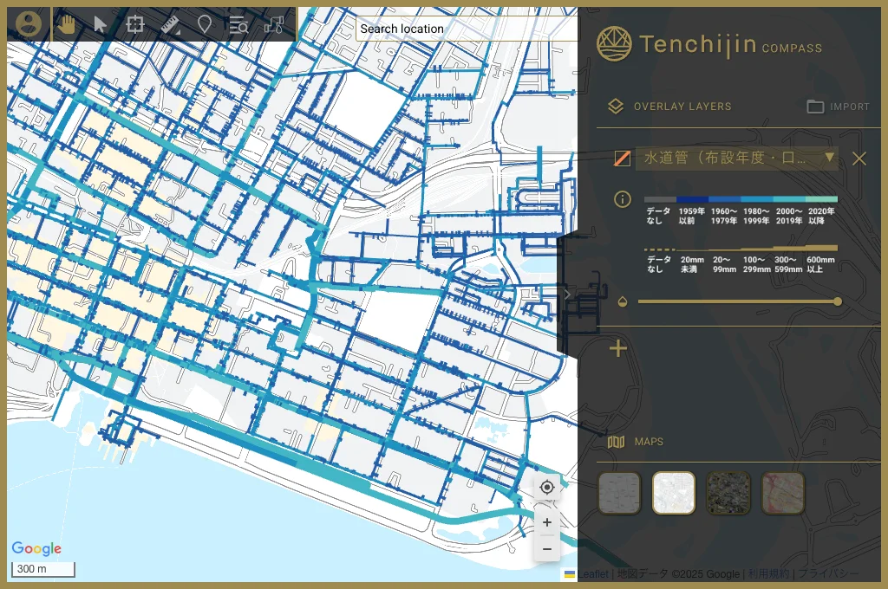
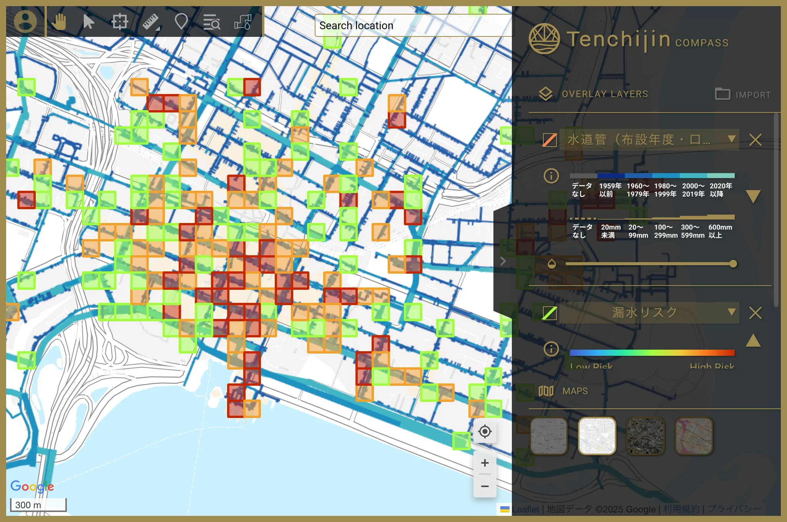

03: THE SOLUTION
One map. Two attributes. Zero layer switching.
The redesigned feature integrates pipe installation year and diameter directly into the risk assessment map using two simultaneous visual encodings, colour and line thickness, that engineers can read at a glance.



Colour encoding
Five-tone blue scale for pipe age. Darker means older, lighter means newer. Grey tones and dashed lines indicate missing data.

Thickness encoding
Varying line weights for pipe diameter. Thicker lines represent larger pipes. Combines with colour to enable simultaneous multi-attribute reading.

Zoom-responsive display
Visualisation adapts at different zoom levels, maintaining readability and detail whether reviewing a city-wide overview or a single street.

Scalable architecture
Modular design accommodates future attribute additions without compromising clarity or usability as the platform evolves.